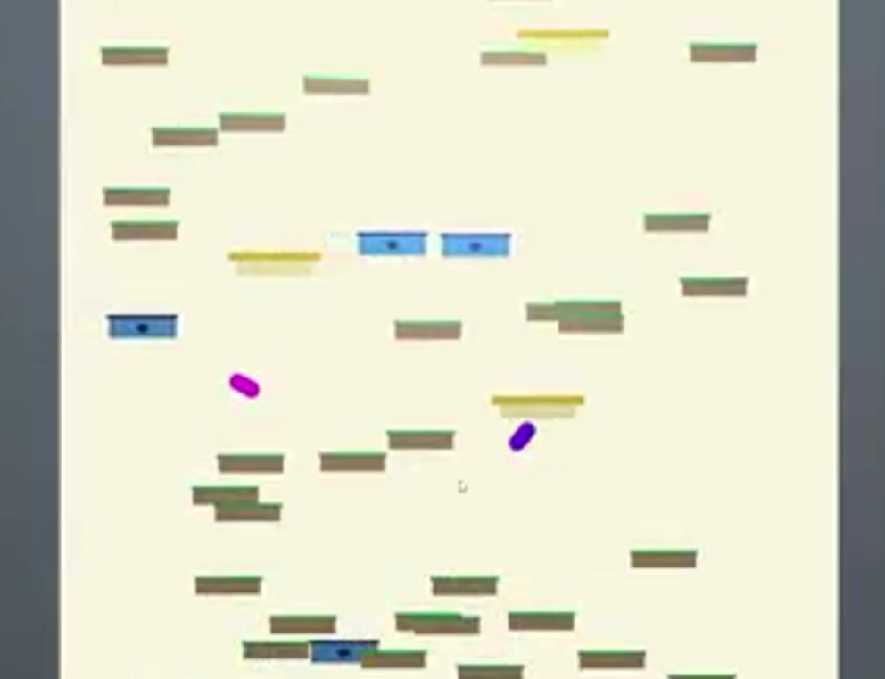
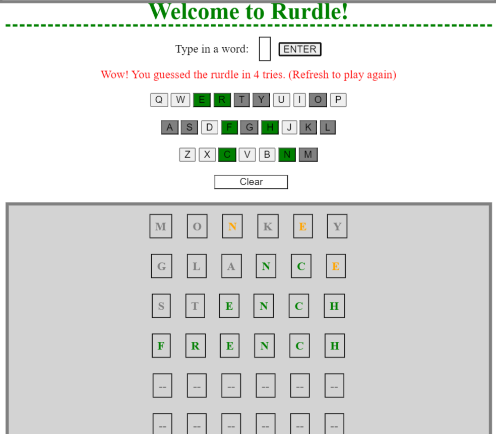
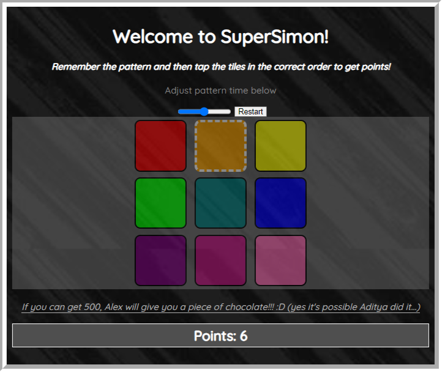
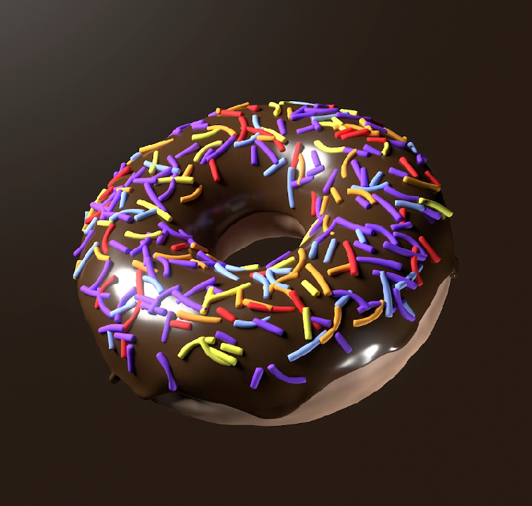
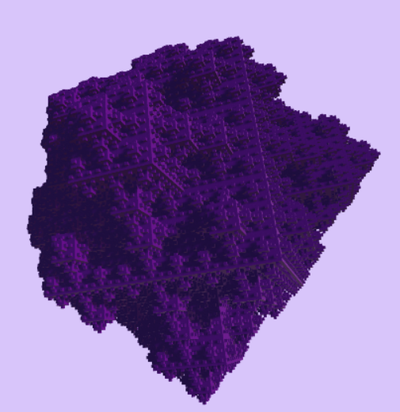
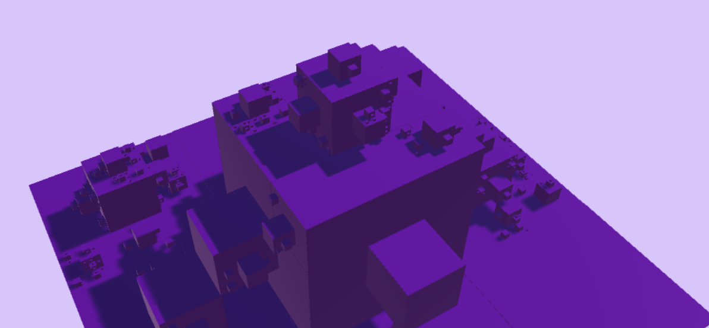

Alex Montello | Games and Renders
Adventures of Jerome
- Mostly complete game made in Unity
- The player, Jerome, navigates 2D spaces collecting floating crystals with various effects
- Jerome can create pairs of portals on objects, which he can go through such that his exiting momentum relative to the second portal is the same as the entry momentum relative to the first
- When portals are created, time slows down to make the gameplay easier and smoother
- There are 8 levels, each with both isntructive and mocking comments
Doodle Jump Clone

- This is a simple copy of the game Doodle Jump, made in Unity
- 2 players can play simultaneously, bouncing off of various types of tiles
- The game can be infinite, but the first player to fall out of the screen loses and ends the game
- Players can move side to side and can be rotated by colliding with tiles and the other player
Mushroom Vaporization
- Created in Blender, inspired by a hatred for mushrooms
- A strange animation of a collection of mushrooms being destroyed by an enormous, articulated laser
- The laser is rigged with inverse kinematics, and the animation is keyframed smoothly
Rurdle

- Identical to Wordle, except with 6 letters
- Made in Replit with HTML, CSS, and JavaScript
- Adaptive keyboard and win/fail messages
Robot Renders


- The robot my team made for the FTC CENTERSTAGE season
- Mostly shiny, metal parts and matte 3D prints
- The first animation is a close-up tour of the outside of the robot; the second is a simulation of a barrage game elements, 'pixels', falling around the robot
- The falling pixels are a physics simulation with a multitude rigid objects falling and colliding
Deconstructing Cubes
- A 3D platformer-like game with no gameplay other than 3D motion with gravity; no particular goal
- When a cube comes in contact with the capsule, it breaks apart into 8 cubes of half the side length and slightly different hue
- Interesting recursive patterns arise when the player falls deep into a large cube
SuperSimon

- Made in Replit using HTML, CSS, and JavaScript
- A memory game in which a 3 by 3 array of colorful tiles are lit up in an increasingly long chain and the player's goal is to sequentially memorize the longest possible chain
- Delay between example tiles can be adjusted with a slider
- Points are awarded for each successful tile press and high scores are stored
Chocolate Donut

- An initial animation made in Blender alongside a tutorial
- Textured and shaded donut with chocolate icing and sprinkles rotates non-linearly around the frame
3D Fractals


- A simulation in Unity that builds fractals out of shapes and recursive patterns
- Spheres generated on the same points on previous iterations' spheres create polyhedra with faces resembling Sierpiński triangles